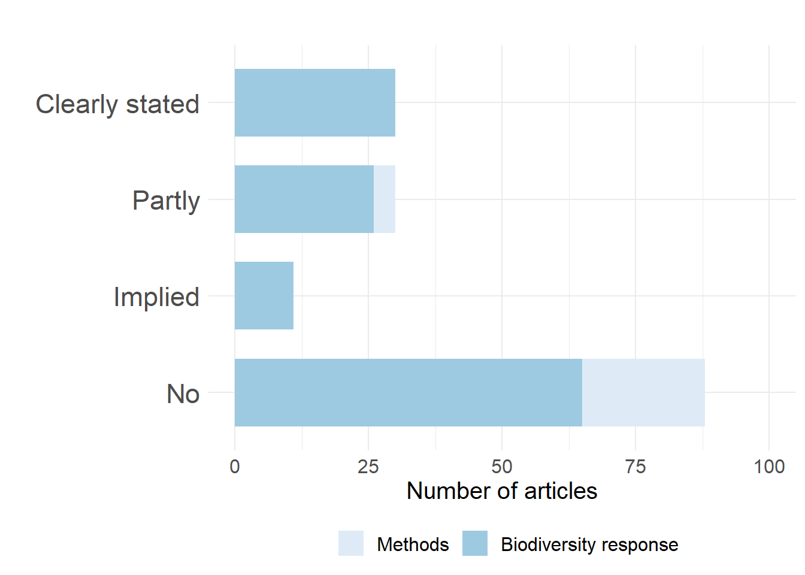

3 Reproducing code
To show that I can read and understand a scientific study and recreate some of the code, I looked up two studies. For the first study, I scored it on several aspects and I wrote a short summary about it.
For the second study I tried to reproduce one figure that is used in the article.
Study 1
Link to the study
| Category | Score |
|---|---|
| Study_purpose | TRUE |
| Data_availability_statement | TRUE |
| Data_location | TRUE |
| Study_location | TRUE |
| Author_review | 7 |
| Ethics_statement | FALSE |
| Funding_statement | TRUE |
| Code_availability | TRUE |
In this study, researchers investigated the heterologous effects of Bacillus Calmette-Guérin (BCG) vaccination against other, non-related virus infections.
It has been known for some time that BCG vaccination has positive heterologous effects against other virusses, but the exact immunological basis for this effect has never been examined in depth. The researchers in this study examined the genome-wide histone modifications that take place as a result of BCG vaccination, and also examined the functional changes in monocytes that take place after BCG vaccination. The effect of BCG vaccination on viral, serological and immunological parameters after administration of the Yellow Fever Vaccine was also examined.
The method used for this study was ChIP-sequencing, to look at genome-wide changes in the distribution of H3K27ac. H3K27ac is a marker of active promoters and enhancers. This was done before BCG vaccination and one month after BCG vaccination. Correlation plots showed a clear distinction between the two kinds of samples. Most changes between the two kinds of samples were related to G-protein coupled receptors and protein kinases, which shows that BCG vaccination has a substantial effect on remodeling signal transduction molecules.
The researchers also showed that the cytokine response to unrelated pathogens was enhanced one month after BCG vaccination. The heterologous T-cell response was also moderately enhanced after BCG vaccination.
Next, this study looked at the difference in immune response to the Yellow Fever Vaccine between people who had had the BCG vaccination, and people who hadn’t. People who had had the vaccine had a significantly lower viremia compared to people who had had the placebo vaccine. It was seen that mainly increased IL1-B and IL-10 production predicted a lower viremia in subjects who had had the BCG vaccine.
Study 2
Link to the study
The code was very readable, and I recreated one of the figures from the study.
Recreating figure 1A
library(tidyverse)
library(ggplot2)
library(here)
library(viridis)
##################################################################################################
##### Descriptives;
d <- as_tibble(read.csv2(here("Data/Data_LittSurvey_Box1.csv")))
d <- d %>% mutate(Hypo=ifelse(Clearly.stated.hypothesis>1, 1, 0)) %>%
mutate(Experiment=ifelse(Study.design=="Experimental", 1,0)) %>%
mutate(YearLaps=abs(Year-2016)) %>%
mutate(Scope2=ifelse(Scope=="Methods", "Methods", "Biodiversity response")) %>%
mutate(Hypothesis2=Clearly.stated.hypothesis) %>%
mutate(Hypothesis2=ifelse(Hypothesis2==0, "No",
ifelse(Hypothesis2==1, "Partly",
ifelse(Hypothesis2==2, "Implied", "Clearly stated"))))
###############################################
##### cleary stated hypotheis;
## Plotting results;
## Clearly stated hypothesis;
## Figure 1a
Hypothesis_prop <- d %>% group_by(Hypothesis2, Scope2) %>%
count(Clearly.stated.hypothesis) %>%
mutate(prop=prop.table(n)) %>%
mutate(Hypothesis3= factor(Hypothesis2,
levels=c("No", "Implied", "Partly", "Clearly stated"))) %>%
mutate(Scope3= factor(Scope2, levels=c("Methods", "Biodiversity response")))
Hypothesis_prop2 <- d %>%
filter(Scope=="Ecological processes") %>%
count(Clearly.stated.hypothesis) %>%
mutate(prop=prop.table(n))
p <- ggplot(data=Hypothesis_prop, aes(x=Hypothesis3, y=n, fill=Scope3)) +
geom_bar(stat="identity", width=0.7, ) +
theme_minimal() +
theme(text = element_text(size=15), legend.position = "bottom", legend.title = element_blank(),
axis.text.y = element_text(size=17)) +
ylim(0, 100)+
labs(x="", y="Number of articles", title="") +
scale_fill_brewer(palette="Blues")
p+coord_flip()
In the field of applied ecological research, the lines between exploratory research and confirmatory research are becoming more and more blurred. A lot of researchers in the field of applied ecology do not follow the strong inference paradigm. This means that a lot of researchers in this field often don’t devise an alternative hypothesis when they’re conducting their research. What’s more, they often don’t even devise a hypothesis before conducting their research. This is dangerous, and could, for example, lead to more confirmation bias in this field.
The researchers of this paper looked at 159 papers from conservation/applied ecology/wildife journals. They scored all the papers on certain criteria, to see how the experiments were conducted. This figure displays the amount of papers that had either a clearly stated hypothesis or not, divided by what the research focussed on: methods or biodiversity response.
It was very easy to reproduce the code, I had to make very few changes before I managed to get the graph.